Before you turn a corner, back up, change lanes or turn around, you need to know what is beside and behind you. Always check your mirrors and over your shoulder to make sure the way is clear and you have enough space to complete the move safely.
Turning a corner
To turn a corner, signal well before the turn. When the way is clear, move into the proper lane, either the far right lane for a right turn or the far left lane in your direction for a left turn. Signal your turn and look from side to side and check your blind spots to make sure the way is clear.
Slow down before you enter the turn; the sharper the turn, the slower you should go. To keep full control of the vehicle, finish braking before you turn the steering wheel.
For a sharp turn, turn the steering wheel with one hand and cross the other hand over it. Grip the wheel on the other side and continue turning. This is called “hand over hand steering.” When you have completed the turn, relax your grip on the steering wheel and let it slip or gently feed it through your hands to return to the straight-ahead position. Do not turn the steering wheel with one finger or the flat palm of your hand. Gradually increase speed as you complete the turn.
Remember, drivers often lose control of vehicles and skid because they try to do more than one thing at a time. Try not to brake and steer at the same time.
Right turns
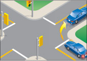
Diagram 2-30
Unless signs or pavement markings tell you not to, always begin and end a right turn close to the right side of the road.
To make a right turn, signal well before the turn and move into the right-hand lane when the way is clear. If the right-hand lane is not marked, keep as far to the right of the road as possible. Look ahead, left, right and left again before starting to turn. If you have not seen any smaller vehicles or pedestrians, check your right rear blind spot. Let cyclists, limited-speed motorcycles, or moped riders go through the intersection before you turn. When it is safe, complete your turn into the right-hand lane of the road you are entering.
Right turn on a red light
Unless a sign tells you not to, you may make a right turn facing a red light as long as you first come to a complete stop and wait until the way is clear. Remember to signal your turn and yield to pedestrians and others using the road.
Left turns
Unless signs or pavement markings tell you not to, always begin and end a left turn in the far left lane in your direction.
To make a left turn, signal well before the turn and move into the far left lane when the way is clear. Look ahead, behind, left, right and left again and check your blind spots. Make your turn when the way is clear.
When you are stopped at an intersection waiting for approaching traffic to clear, don't turn your steering wheel to the left until you can complete the turn. With your wheels turned to the left, your vehicle could be pushed into the path of oncoming traffic.
When two vehicles coming from opposite directions meet in an intersection waiting to turn left, each should turn to the left of the other after yielding the right-of-way to pedestrians and oncoming traffic.
Motorcycles, bicycles, limited-speed motorcycles and mopeds turn left at intersections in the same way as larger vehicles. If you are making a left turn behind one of these vehicles, do not pull up beside it to make your turn at the same time. Stay behind and turn when the way is clear. Wait for the smaller vehicle to move right before you pass.
The following diagrams show you the correct way to turn left on different types of roads:
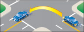
Diagram 2-31: Two-way road to a two-way road.
Turn from the lane closest to the centre line to the lane right of the centre line, following a smooth arc. Then, when you can, move into the right curb lane.
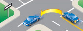
Diagram 2-32: Two-way road to a one-way road.
Turn from the lane closest to the centre line to the left curb lane.
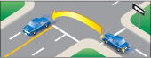
Diagram 2-33: One-way road to a two-way road.
Turn from the left curb lane to the lane just right of the centre line. Then, when you can, move into the right curb lane.
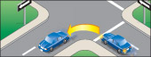
Diagram 2-34: One-way road to a one-way road.
Turn from the left curb lane to the left curb lane.
Left-turn lanes
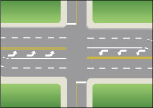
Diagram 2-35
Some roads have special lanes for vehicles turning left (Diagram 2-35). At an intersection where left-turn lanes are marked on the pavement, make your turn from the marked lane. Keep this lane position as you turn onto the other road.
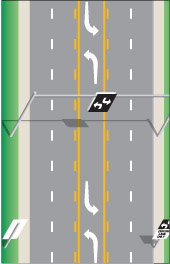
Diagram 2-36
The centre lane of some roads is used as a two-way left-turn lane (Diagram 2-36). This lets left-turning vehicles from both directions wait for a chance to turn without holding up traffic. To use a two-way, left-turn lane, follow these steps:
- Signal and move into the centre lane shortly before your turn. Slow down.
- Carefully move forward to a spot opposite the road or driveway where you want to turn.
- Make your turn when the way is clear.
Remember that vehicles from the opposite direction also use this lane to turn left. As they wait in front of you, it may be hard for you to see oncoming traffic. Only go when you are sure the way is clear. These left-turn lanes are not to be used for passing.
Left turn on a red light
You may turn left from a one-way road to a one-way road on a red light after coming to a complete stop and making sure the way is clear. Yield to pedestrians and traffic.
Driving through roundabouts
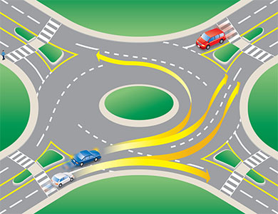
Diagram 2-37
Approaching:
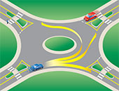
Diagram 2-38
- As you approach the roundabout, look for signage to choose your exit. Choose which lane to use as you would for any other intersection (See Diagram 2-37). Use the left lane to turn left or to go straight. Use the right lane to turn right or to go straight. (See Diagram 2-38). Do not enter a roundabout from the right lane if you want to turn left. Cyclists generally keep to the centre of the appropriate lane, or dismount and use the roundabout as a pedestrian would. (See Diagram 2-39.)
- Slow down and watch for pedestrians on the approach to the yield line at the entrance of the roundabout. Stay in your lane.
Entering:
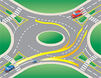
Diagram 2-39
- Visual checks: Do visual checks of all vehicles already in the roundabout and those waiting to enter (including cyclists).
- Look left: Traffic in the roundabout has the right-of-way. When preparing to enter the roundabout, pay special attention to the vehicles to your left. Adjust your speed or stop at the yield sign if necessary.
- Adequate gap: Watch for a safe opportunity to enter the roundabout. Enter when there is an adequate gap in the circulating traffic flow. Don't enter directly beside another already in the roundabout, as that may be exiting at the next exit.
- Travel counter-clockwise: Once in the roundabout, always keep to the right of the central island and travel in a counter-clockwise direction.
- Keep moving: Once you are in the roundabout, do not stop except to avoid a collision; you have the right-of-way over entering traffic. Do not change lanes while in the roundabout. If in the inside lane and you miss your exit, you must continue around until you meet your exit again.
Exiting:
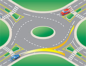
Diagram 2-40
- Signal: Be sure to signal your exit and watch for pedestrians.
- Maintain your lane: Stay to the left if you entered from the left lane, or stay to the right if you entered from the right lane.
- Maintain your position: Maintain your position relative to other vehicles.
- Signal intent to exit: Once you have passed the exit before the one you want, use your right-turn signal.
- Left lane exit: If exiting from the left lane, watch out for vehicles on the right that continue to circulate around the roundabout.
Dealing with particular situations at a roundabout
Consider large vehicles
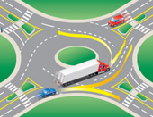
Diagram 2-41
Allow extra room alongside large vehicles (trucks and buses). Large vehicles may have to swing wide on the approach or within the roundabout. Give them plenty of room. See (Diagram 2-41)
Pull over for emergency vehicles
If you are in a roundabout when an emergency vehicle approaches, exit at your intended exit and proceed beyond the traffic island before pulling over. If you have not entered the roundabout yet, pull over to the right if possible and wait until the emergency vehicle has passed.
Driving a large vehicle in a roundabout
A driver negotiating a roundabout in a large vehicle (such as a truck or bus) may need to use the full width of the roadway, including the apron (a mountable portion of the centre island adjacent to the roadway) if provided. Prior to entering the roundabout, the vehicle may need to occupy both lanes. Give large vehicles plenty of room to manoeuvre.
Note: In some areas of Ontario, older “traffic circles” exist. They are larger than roundabouts, allowing higher speeds, and force traffic to merge and weave. Modern roundabouts have a smaller inscribed circle diameter and use splitter islands (to deflect traffic) at the entry points to slow traffic speeds, or to provide pedestrian refuge. The entry is also controlled by the “yield to the left” principle; for example, cars circulating within the roundabout have the right-of-way over entering vehicles.
Backing up
Take extra care and move slowly when backing up (reversing) your vehicle. Before you begin, check that the way is clear behind you. Be especially careful to look for children and cyclists.
While firmly holding the steering wheel, put the gear selector in reverse and turn sideways in your seat to look over your shoulder in the direction you are moving. If you are reversing straight back or to the right, turn your body and head to the right and look back over your right shoulder (Diagram 2-42).
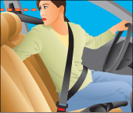
Diagram 2-42
If you are reversing to the left, turn your body and head to the left and look over your left shoulder (Diagram 2-43). Always check the opposite shoulder as well. If you are turning as you reverse, check that the front end of your vehicle does not hit anything.
You don't have to wear a seatbelt while backing up. If you need to remove your seatbelt to turn your body to see properly when reversing, do so. But don't forget to buckle up again before moving forward.
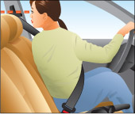
Diagram 2-43
It is illegal to drive in reverse on a divided road that has a speed limit of more than 80 km/h. This applies to the travelled section of the road and the shoulder. The only exception to this rule is if you are trying to help someone in trouble.
Turning around
You may need to turn around when driving if you miss a turn or go too far along a road. There are several ways to do this safely.
The simplest and safest way is to drive around the block, but there may be times when this is not possible. In such cases, a U-turn or a three-point turn may be necessary.
U-turn
Before you make a U-turn, check to make sure there is no sign saying not to.
To make a U-turn safely, you must be able to see well in both directions. It is illegal to make a U-turn on a curve in the road, on or near a railway crossing or hilltop, or near a bridge or tunnel that blocks your view. Never make a U-turn unless you can see at least 150 metres in both directions.
To make a U-turn, signal for a right turn, check your mirror and over your shoulder and pull over to the right side of the road. Stop. Signal a left turn and when traffic is clear in both directions, move forward and turn quickly and sharply into the opposite lane. Check for traffic as you turn.
Three-point turn
On narrow roads you need to make a three-point turn to change directions. As shown in Diagram 2-44, a three-point turn starts from the far right side of the road. Make sure you do not make a three-point turn on a curve in the road, on or near a railway crossing or hilltop, or near a bridge or tunnel that blocks your view.
Signal for a left turn. When the way is clear in both directions, move forward, turning the steering wheel sharply left towards the curb on the far side of the road. When you have reached the left side of the road, stop. Shift the vehicle into reverse. Signal a right turn. After checking that the way is still clear, turn the steering wheel sharply to the right, while backing up slowly to the other side of the road. Stop. Shift to forward gear and check traffic. When the way is clear, drive forward.
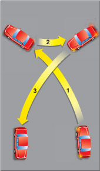
Diagram 2-44
Summary
By the end of this section, you should know:
- How to properly turn left or right at intersections
- The rules surrounding turns onto and from one way streets
- How to navigate a roundabout
- Where to look and how to manoeuvre your vehicle when backing up
- Methods of turning your vehicle around to travel back in the opposite direction (U-turns, three-point turns)